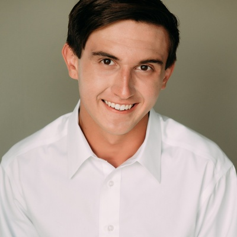

Steven Haworth
- Machine Learning Engineer, EEG/Neurotech, WashU Medicine Neurology
- Graduate Researcher, Struck Lab, Washington University in St. Louis
- MS Data Science, University of Wisconsin–Madison, expected December 2026

My work in EEG-based machine learning spans seizure detection, consciousness monitoring, and neural signal classification across epilepsy, acute brain injury, coma, sleep disorders, and post-cardiac arrest populations. I build systems designed for clinical deployment. Current work includes active collaborations with UW-Madison, Harvard, Yale, and Washington University in St. Louis.
I work across CNNs, LSTMs, large language models, computer vision, statistical modeling, mathematical optimization, and the full data lifecycle, including experiment tracking and model versioning with tools like MLflow.
Email preferred for business & collaboration inquiries. Seeking full-time opportunities post-December 2026. Open to relocation.